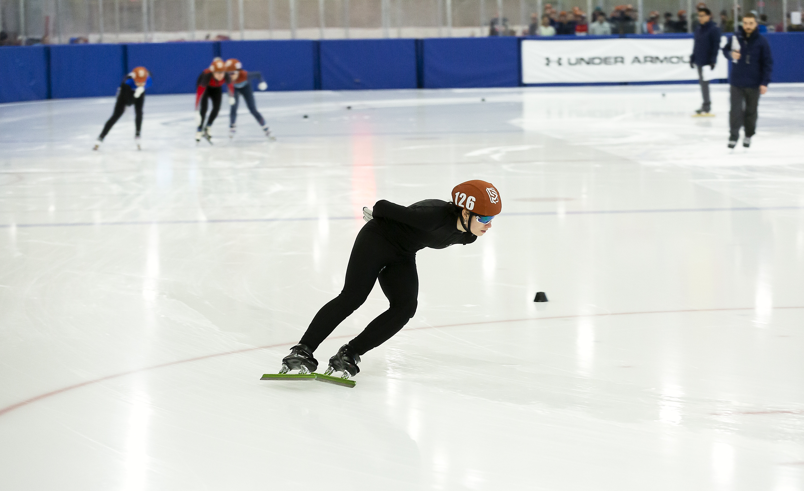
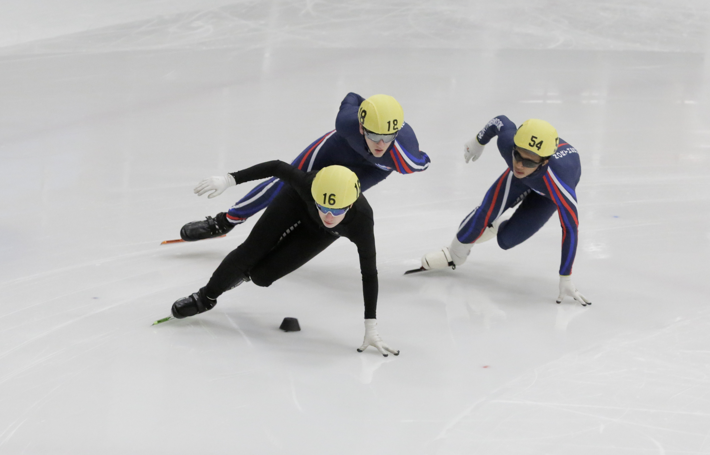
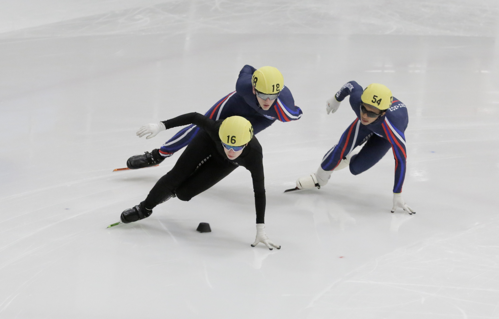

Welcome to my portfolio! Here, you'll find a curated selection of my latest work in Student Organization involvement, Neuropsychopharmacology and Behavioral Neuroscience Research, Hackathon Competitions, and other Projects.
I am currently seeking summer 2026 internship opportunities that align with my interests in the Cognitive and Computer sciences, particularly at the intersection of artificial intelligence and human-computer interaction. I am eager to apply my technical skills and research experience to projects that explore cognition, neural networks, and intelligent systems.
Internship Experience ▼
Software Development Intern & Neuroscience Lab Assistant - UIUC (May 2025 - PRESENT)
As a Laboratory Assistant in the Gulley Laboratory for Neuropsychopharmacology, I contribute to research investigating the behavioral and neural consequences of repeated psychoactive drug exposure. My work supports studies on intravenous methamphetamine self-administration in adolescent and adult rodent models. I manage and maintain operant chambers, assist in daily experimental preparation, and handle rats with consistency and care, including weighing and transporting them between controlled environments. I also configure behavioral software to initiate and monitor real-time data collection for lever-pressing, reinforcement delivery, and time-locked activity tracking.
Through my involvement, I’ve gained hands-on experience in behavioral neuroscience methods—particularly operant conditioning, reinforcement learning, and neuropharmacological protocol execution. I support the lab’s broader goal of understanding developmental differences in drug sensitivity and motivation. In addition, I’ve observed catheter implantation surgeries, which provided exposure to basic principles of stereotaxic technique and in vivo preparations for neural monitoring.
Beyond these responsibilities, I’m co-leading a side project to build a 12-camera, multi-angle behavioral monitoring system compatible with the SLEAP AI pose estimation toolkit. This setup allows for detailed, automated video capture of rodent self-administration behavior during experiments. I’m involved in hardware selection, Python-based system configuration, and ensuring seamless integration with existing data pipelines. This project combines my interests in neuroscience, computer vision, and artificial intelligence to support scalable, high-throughput analysis of fine-grained behavioral patterns.
Java Programming Tutor — UIUC (Jan 2024 – Jan 2025)
As a tutor for the introductory Java programming course (CS 124) at UIUC, I provided targeted academic support to students learning object-oriented programming, algorithmic logic, and data structure implementation. By guiding students through assignments and debugging sessions, I helped reinforce foundational topics such as class design, inheritance, recursion, and memory management. Each student interaction challenged me to reframe technical concepts in intuitive ways, improving my own ability to abstract problems and think modularly.
Beyond enhancing my technical fluency, this role deepened my communication skills and pedagogical versatility. I regularly adapted my explanations to suit different learning styles—whether through visual metaphors, algorithm walkthroughs, or code refactoring examples. Mentoring students not only kept me sharp with Java syntax and runtime analysis, but also strengthened my ability to teach under pressure, foster collaborative problem-solving, and cultivate confidence in others' technical abilities.
Student Organizations & Leadership ▼
NeuroTech @ UIUC — Model Development Engineer & Researcher (Jan 2025 – Present)
Since the Spring 2025 semester, I’ve contributed to NeuroTech’s VR Neurofeedback initiative, where I work at the intersection of neuroscience, AI, and extended reality (XR). My primary responsibility involves integrating EEG data acquisition with real-time neurofeedback loops inside a Unity-based VR environment. I use Python, NumPy, and Unity C# scripts to build feedback systems that adapt visual stimuli based on live cognitive states. In this project, we aim to make neurofeedback therapy more accessible and scalable by replacing traditional lab setups with portable VR headsets. I’m developing and refining ML models to classify user attention and arousal levels using time-series EEG inputs. Our project demonstrates the potential of brain-computer interfaces (BCIs) in therapeutic contexts, bridging neuroscience research with human-centered computing. At Engineering Open House 2025, I helped deliver a live demo where attendees saw their brain activity reflected in immersive VR scenes—an outreach highlight that sharpened my ability to simplify and communicate technical ideas to diverse audiences.
Web Development/User Experience
Through my Web-Development course, I have learned how to expand on my skills in curating smooth, interactive websites. One of my latest projects involves my position as the Registration Management Chair for Illini Speed, where new users can sign up for learn-to-skate sessions led by national level skaters.
Visit the Offical Illini Speed Website Here!
Women in Electrical and Computer Engineering (WECE) — Executive Software & Logistics Chair
My involvement with WECE began during my freshman spring at the annual WECE Hacks Capture the Flag Hackathon, where my team—formed spontaneously—won first place and the Best Hardware Project award. I was responsible for coding an Arduino-based synthesizer prototype, sparking my interest in embedded systems and rapid prototyping. That experience led to my appointment as Logistics Chair the following fall. In this role, I’ve directed the operational framework for WECE Hacks, a multi-day hackathon with 80+ participants. I oversee budget allocation, venue setup, and timeline orchestration while also managing digital infrastructure including our event website (built using HTML/CSS, JavaScript, and GitHub Pages). My logistics work integrates UX-centered design thinking, agile coordination, and systems planning to ensure a technically robust and user-friendly event experience. Additionally, I work with version-controlled documentation to coordinate communications across subcommittees and sponsors.
Visit the WECEHACKS 2025 Website Here!
Women in Computer Science — Dev-Ada & Code-Ada Presenter (Jan 2024 – Aug 2025)
As part of the WiCS Dev-Ada 2024 competition, I co-developed Melodify, an AI-driven audio generation platform designed to democratize music composition. I led frontend development in React, crafted an intuitive UI/UX, and coordinated integration with a Python/Flask backend running Meta’s AudioCraft framework for generative audio processing. Using machine learning principles such as autoregressive modeling and token embeddings, we built a system that translated user-entered prompts into multi-track musical arrangements. Our pipeline used SQLite for lightweight data handling, with GitHub for version control and collaboration. Beyond coding, I conducted model selection experiments and latency benchmarking to ensure real-time responsiveness. We showcased Melodify at UIUC’s Engineering Open House 2024, enabling hundreds of visitors to interact with an ML-backed creative tool. This experience highlighted my ability to lead technically and communicate complex concepts in accessible, engaging ways.
GitHub Repository Link - CODE-ADA
GitHub Repository Link - DEV-ADA
Technical Impact Across Organizations
Through these initiatives, I’ve honed a multidisciplinary technical skillset:
- Statistical Programming: Python, R, SQL, SAS, C++, Java, HTML/CSS, JavaScript
- Data Science & Modeling: Biostatistics, Predictive Modeling, Clinical Data Analysis, Regression
- Machine Learning & Data Engineering: TensorFlow, PyTorch, NumPy, Pandas, Musicgen, ETL Pipelines, SLEAP AI
- Dev Tools & Cloud: Unreal Engine, Git, Docker, Google Cloud, Google Colab, VSCode, Unity
Research ▼
Undergraduate Summer Journal Club — Participant
As part of my ongoing involvement in neuroscience research at UIUC, I actively participate in the Undergraduate Summer Journal Club, a biweekly seminar series dedicated to critical analysis of current peer-reviewed neuroscience literature. Each session centers on a primary research article selected by students or faculty, followed by an open discussion of experimental design, findings, and implications. These meetings deepen my understanding of cutting-edge topics such as synaptic plasticity, neuropharmacology, adolescent brain development, and circuit-level modeling.
Presenting and analyzing published studies has strengthened my ability to assess methodologies, interpret results with a skeptical and scientific lens, and contextualize emerging research within broader theoretical frameworks. These discussions have directly informed my own lab work and inspired independent ideas I hope to pursue in future research projects.
Publications
My first acknowledgements for research and data analysis will soon be published by Dr Josh Gulley!
Competitions & Hackathons ▼
Cozad New Venture Challenge — UIUC 2025
As a finalist in the 2025 Cozad New Venture Challenge, I co-developed and pitched Brainstorm, a neurofeedback-based therapeutic platform combining EEG signal analysis with adaptive AI feedback systems. This experience honed my ability to communicate complex technical concepts—such as BCI signal filtering, real-time neuroadaptive logic, and statistical modeling—in a clear, compelling format for investors, judges, and healthcare professionals.
I led the preparation of pitch materials, conducted regulatory and market landscape analysis, and collaborated with teammates on defining our value proposition. The experience reinforced my confidence in public speaking, rapid Q&A response, and user-centered storytelling while bridging the technical and business domains.

Code Ada — Code to Cure Hackathon (Big10Health Initiative)
For Code Ada's Code to Cure Hackathon, I helped engineer a doctor-patient matching platform built around survey-driven symptom collection and clinician filtering. On the frontend, I created responsive layouts with HTML, CSS, and JavaScript, developed interactive form logic, and ensured mobile accessibility. I also worked closely with the backend team to implement routing and dynamic rendering via Flask, using url_for() and templating logic to deliver a seamless navigation experience. The site works by allowing the user, a big 10 university student, to complete a comprehensive survey covering a range of disorder symptoms, where they are then matched with healthcare providers based on their survey results. The matching process leverages an SQLite database, where patient symptom scores are analyzed to identify providers specializing in the most relevant areas of care.


On the backend, we used SQLite for real-time form data storage and querying logic, enabling patients to be matched with providers based on symptom clustering and availability. We coordinated everything using GitHub, leveraging pull requests and branching workflows to merge UI with backend functionality. This full-stack collaboration sharpened my ability to rapidly iterate on web systems and contribute to data-driven medical tools.
Melodify — Dev-Ada 2024
At the 2024 Dev-Ada Hackathon, I led frontend development and research for Melodify, a generative AI platform that creates original music from user prompts. I implemented the interface using React and built smooth UX flows with real-time feedback and visual progress indicators. On the backend, we used Python and Flask to route user input into the Meta AudioCraft library, allowing for dynamic melody generation from mood/genre prompts.
I coordinated model selection and audio quality benchmarking while ensuring integration with our backend databases. Our team presented Melodify at the UIUC Engineering Open House 2024, where attendees interacted with the system live. This project showcased my ability to build AI-powered creative tools, manage a full ML project lifecycle, and deliver both technical depth and user-centered design.


Recreational Extracurriculars ▼
Illini Speed — Coach & Registrar Executive (Aug 2023 – Present)
As an executive chair member of the Illini Short Track Speed Skating Club, I spend much of my free time coaching beginner and intermediate skaters, guiding them through the fundamentals of short track technique, race preparation, and dryland (off-ice) training. I also manage the club's registration system and safety oversight, ensuring compliance with university protocols and supporting new members’ onboarding.
My experience as a competitive skater of nearly 15 years helps me mentor others in both physical training and mental preparation, emphasizing strategy, balance, and injury prevention. I strive to foster a positive and disciplined team environment, blending leadership with athletic passion. I am especially proud of being a founding member of Illini Speed, as it is one of only two intercollegiate speed skating teams in the nation!
Competitive Speed Skating History
I’ve competed from the regional level up to the international trial level as a short track speed skater over my years of training. I've represented my local club, the Northbrook Speed Skating Club, throughout my high school years, and the Park Ridge Speed Skating club before that. Over the years, some of my proudest achievements have included participation in the US Junior World Championship Trials in Milwaukee Wisconsin, and an overall ranking of first place at the US Nationals 2023.
My athletic journey has shaped my time management, discipline, and focus—skills I bring into my academic and professional work. Below are some photos from past seasons.

 
